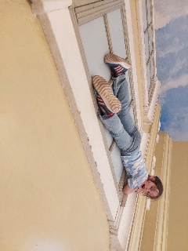
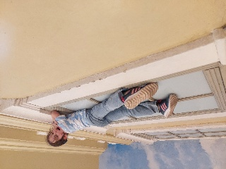
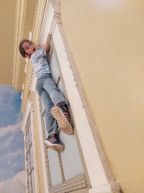

Goal. The pipeline's only orientation handling is EXIF-based
(ImageOps.exif_transpose in rule_based.py; landmark-based orientation exists only for
face crops). Photos with wrong or stripped EXIF (screenshots, WhatsApp exports, scanned prints) rotate
undetected. Can any scorer detect content rotation?
D:\Budapest2025_Google), EXIF-normalized,
downscaled to 1024 px, then pixel-rotated to 0/90/180/270° and re-encoded (strips EXIF) = 488 variants.
Variants kept in data/variants/..venv/Scripts/python scripts/experiment_defectscore_rotation.py. Raw scores: data/scores.csv.| Method | 4-way accuracy (chance 25%) | AUC upright vs rotated |
|---|---|---|
| Ours — pipeline overall score | 22.1% | 0.500 |
| Classical — sky prior | 47.5% | 0.722 |
| SOTA — CLIP zero-shot | 82.0% | 0.822 |
Our score is exactly chance: mean 0.81056 upright vs 0.81057 rotated — the pipeline is blind to orientation by construction, as predicted. The sky prior gets half of outdoor shots but fails indoors and on 90° rotations. CLIP zero-shot — with three text prompts and no training — reaches 82%; its misses are mostly close-ups and symmetric scenes with no gravity cue.



Full variant set: reports/2026-07-10_defect_rotation/data/variants/ (488 images).
Generated 2026-07-10 by scripts/experiment_defectscore_rotation.py;
metrics in data/metrics.json.